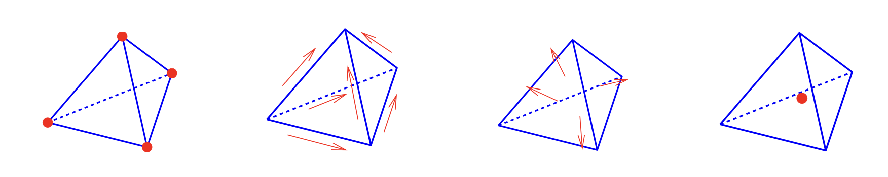

37. The de Rham complex#
The spaces \(H^1\), \(H(\operatorname{curl})\), \(H(\operatorname{div})\), and \(L_2\) form a sequence:
Since \(\nabla H^1 \subset [L_2]^3\), and \(\operatorname{curl} \nabla = 0\), the gradients of \(H^1\) functions belong to \(H(\operatorname{curl})\). Similar, since \(\operatorname{curl} H(\operatorname{curl}) \subset [L_2]^3\), and \(\operatorname{div} \operatorname{curl} = 0\), the \(\operatorname{curl}\)s of \(H(\operatorname{curl})\) functions belong to \(H(\operatorname{div})\).
The sequence is an exact sequence. This means that the kernel of the right differential operator is exactly the range of the left one (on simply connected domains). We have used this property already in the analysis of the mixed system.
The same property holds on the discrete level: Let
\(W_h\) be the nodal finite element sub-space of \(H^1\)
\(V_h\) be the Nédélec (edge) finite element sub-space of \(H(\operatorname{curl})\)
\(Q_h\) be the Raviart-Thomas (face) finite element sub-space of \(H(\operatorname{div})\)
\(S_h\) be the piece-wise constant finite element sub-space of \(L_2\)
The finite element spaces form an exact sequence
\[ \begin{array}{ccccccc} W_h & \stackrel{\nabla}{\longrightarrow} & V_h & \stackrel{\operatorname{curl}} {\longrightarrow} & Q_h & \stackrel{\operatorname{div}}{\longrightarrow} & S_h \end{array} \]
{kind=link}

This combination of finite elements allow to discretize Stokes’ theorem and Gauss’ theorem exactly:
Discretize the vector-potential \(A\) be edge elements, i.e. \(\int_E A_\tau\) is defined for every edge. Then the face integrals of the normal component of the \(\operatorname{curl} A\) can be evaluated as:
\[ \int_F (\operatorname{curl} A)_n = \int_{\partial F} A_{\tau} = \sum_{E \subset \partial F} \int_E A_{\tau} \]\(B_h = \operatorname{curl} A_h\) lies in the Raviart-Thomas (face element) space.
Discretize a current \(j\) by face elements, i.e. \(\int_F j_n\) is defined for every face. Then the cell integral of \(\operatorname{div} j\) can be evaluated as:
\[ \int_T \operatorname{div} j = \int_{\partial T} j_n = \sum_{F \subset \partial T} \int_F j_n \]\(\dot q_h = \operatorname{div} j_h\) lies in the element-wise constant (cell element) \(L_2\)-space.
Now, we discretize the mixed formulation of magnetostatics by choosing edge-finite elements for \(H(\operatorname{curl})\), and nodal finite elements for \(H^1\): Find \(A_h \in V_h\) and \(\varphi_h \in W_h\) such that
The stability follows (roughly) from the discrete sequence property. The verification of the LBB condition is the same as on the continuous level. The kernel of the \(a(.,.)\)- form are the discrete gradients, the kernel of the \(b(.,.)\)-form is orthogonal to the gradients. This implies solvability. The discrete kernel-coercivity (with \(h\)-independent constants) holds true, but requires a nontrivial proof.
The exact sequences on the continuous level and on the discrete level are connected via the de’Rham complex: Choose the canonical interpolation operators (vertex-interpolation \(I^W\), edge-interpolation \(I^V\), face-interpolation \(I^Q\), \(L_2\)-projection \(I^S\)). This relates the continuous level to the discrete level:
The de’Rham complex is a commuting diagram:
\[ I^V \nabla = \nabla I^W \qquad I^Q \operatorname{curl} = \operatorname{curl} I^V \qquad I^S \operatorname{div} = \operatorname{div} I^Q \]
Proof: We prove the first part. Note that the ranges of both, \(\nabla I^W\) and \(I^V \nabla\), are in \(V_h\). Two functions in \(V_h\) coincide if and only if all functionals coincide. It remains to prove that
Per definition of the interpolation operator \(I^V\) there holds
Integrating the tangential derivative gives the difference
Starting with the left term, and using the property of the nodal interpolation operator, we obtain
We have already proven the commutativity of the \(H(\operatorname{div})-L_2\) part of the diagram. The middle one involves Stokes’{} theorem. \(\Box\)
This is the key for interpolation error estimates. E.g., in \(H(\operatorname{curl})\) there holds
Since the estimates for the \(L_2\)-term and the \(\operatorname{curl}\)-term are separate, one can also scale each of them by an arbitrary coefficient.
The sequence is also compatible with transformations. Let \(\Phi : \widehat T \rightarrow T\) be an (element) transformation, with \(F = \Phi^\prime\). Choose
Then
Using these transformation rules, the implementation of matrix assembling for \(H(\operatorname{curl})\)-equations is very similar to the assembling for \(H^1\) problems (mapping to reference element).